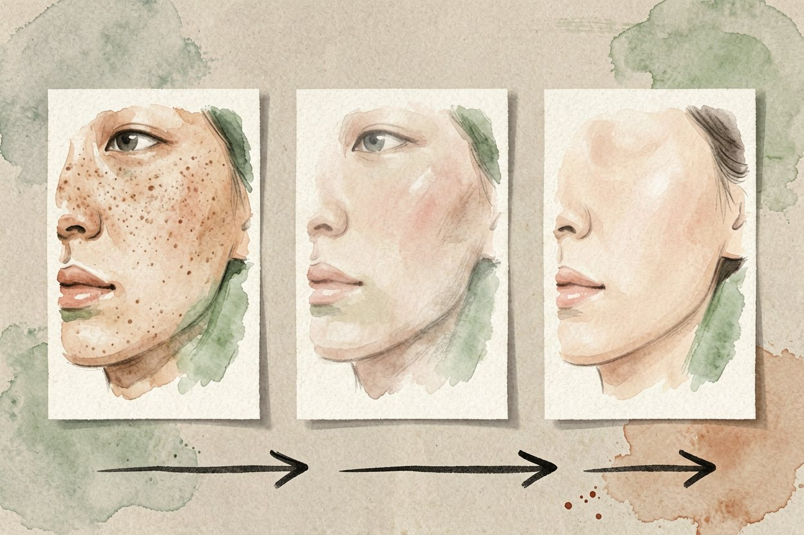
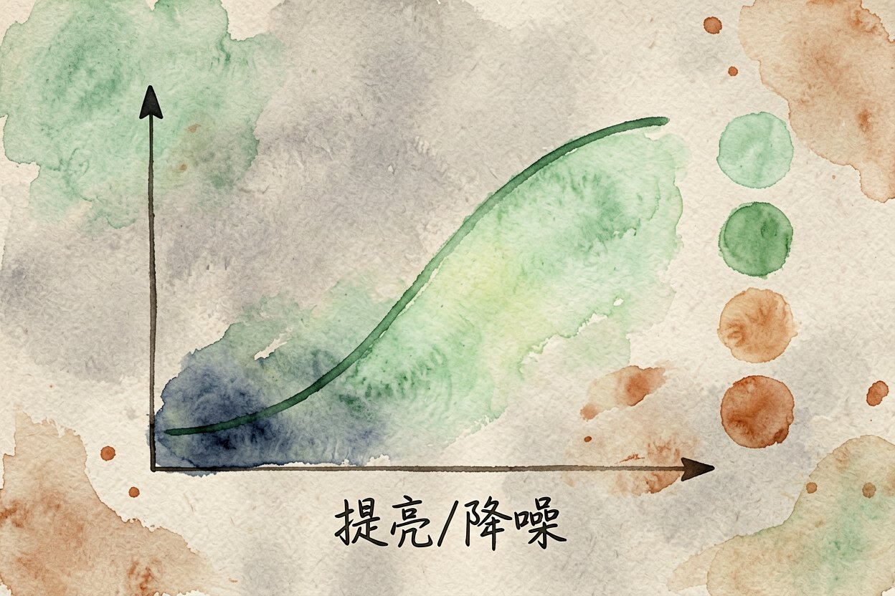

AI 修图入门：一键消除路人、放大模糊照片的完整教程
拍完照才看到背景有人、照片有点糊？用 AI 修图点几下，就能把路人抹掉、把模糊变清晰。
AI 修图是本文的核心主题，下面详细介绍如何使用。
AI 修图是什么：把麻烦的后期交给模型

AI 修图，就是用模型自动完成以前要开 Photoshop 手动抠半天的工作。你框选一处瑕疵，模型根据周围像素把那块补好；你上传一张小图，它推算出更多细节再放大。和AI 商品图拍摄一样，它的目标都是让不会设计的人也能拿到能用的图。
过去修一张图要学蒙版、画笔、仿制图章，现在大部分操作变成了「圈一下、点一下」。底层是扩散模型那一类技术，思路是猜出被遮挡或缺失的部分长什么样，再填回去。
最常用三类场景：消除、放大、换背景

普通人用 AI 修图，八成需求落在三件事上。第一是消除，把游客、电线杆、垃圾桶从画面里拿掉。第二是放大，老照片或截图太糊，拉到能看清。第三是换背景和调色，给证件照换底色，或让灰蒙蒙的风景变通透。
这三类的工具不完全一样。消除和换背景多用在线编辑器，放大偏好本地或专业软件。先想清楚你要哪一种，别一上来就买最贵的会员。免费档大多够日常练手，确定高频再用再开订阅。
用消除笔去掉路人和杂物
消除类工具里，美图秀秀、醒图、Canva 的橡皮擦都够日常用。操作几乎一样：打开照片，选消除或修复笔，在路人和杂物上涂抹，松手等一两秒。模型会参考周边纹理补全，多数时候一次成功。
复杂场景可以加一句文字描述，让结果更可控：
如果一次没干净，别反复在同一处猛涂，先把强度调低，分两次处理。强度拉太高反而会出现糊斑，宁可慢一点也别图快。
> 补充：AI 修图的详细用法可参考上文步骤。
> 补充：AI 修图的详细用法可参考上文步骤。
> 补充：AI 修图的详细用法可参考上文步骤。
## 把模糊小图放大到清晰
放大靠的是超分辨率模型，代表是 Topaz Photo AI、Remini、腾讯智影这类。上传后选「放大」或「清晰化」，倍数建议二到四倍。倍数越高越容易凭空长出假细节，人脸尤其容易变怪，老人脸的皱纹可能被抹平或加错。
放大前先裁掉多余边缘，只留主体，速度更快也更准。放大后放大到百分百看一眼眼睛和文字边缘，出现重影就退回低一档倍数重来。和[AI 老照片修复](ai-old-photo-restore.html)是同一套思路，只是目标更轻量，不必追求完全复原。
## 换背景调色与新手避坑
A: 掌握 AI 修图 的关键在于多实践，建议先跑通基础流程再逐步深入。
**Q: AI 修图 免费吗？**
A: 大多数工具提供基础免费额度，具体以官网当前说明为准。
AI 修图的最佳实践见上文详细步骤，别错过核心要点。
本文信息核对于 2026-08-24。AI 产品的价格、免费额度与功能变动频繁，实际以各工具官网当前说明为准。